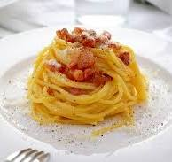

Torna alla Home
Torna alla Home
Carbonara

Description
Un piatto semplice e veloce che rappresenta la cucina romana per eccellenza.
Ingredients
- Spaghetti
- Guanciale
- Uova
- Pecorino romano
- Pepe nero
Steps
- Cuoci la pasta al dente.
- Rosola il guanciale.
- Mescola uova e pecorino.
- Unisci tutto lontano dal fuoco.